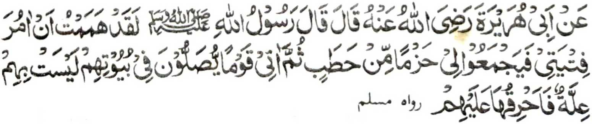

Miyakathitayan ko Abu Hurairah a pitharo iyan a pitharo o Rasulollah (Sallallaho ‘Alaihi wa Sallam), “Sabenar a kabaya aken a sogo-on aken so manga ngongoda a ipanimo ako iran sa bekhesan a itagon na oriyan niyan na songowan ko so manga tao a gi-i zambayang (sa paralo) ko manga walay ran a da-a ba iran khida-owa a sabap ka itotong aken kiran.”
So Nabi (Sallallaho ‘Alaihi wa Sallam), na sekaniyan na tanto a mala-i gagao ago makalimo-on ko manga Ummat iyan, go tanto sekaniyan a pekhasakitan ko ka-daya niyan kiran ko apiya pen maito a maregen iran, na makimpen oto na tanto a miyasakita ginawa niyan taman sa ba niyan den kharawi manotong so manga walay o siran a masoso-at ko gi-i ran kazambayang ko manga walay ran.